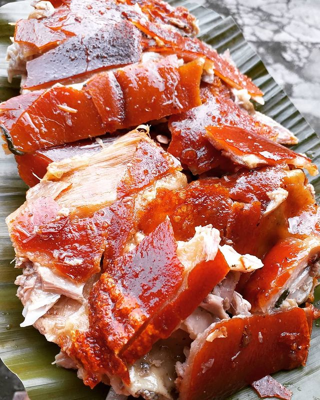
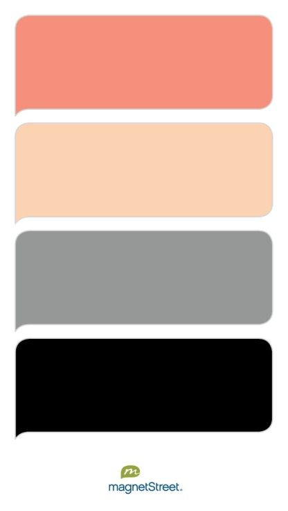
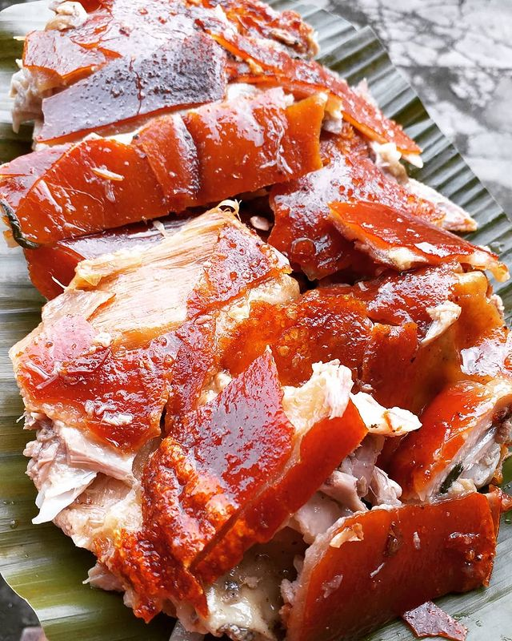
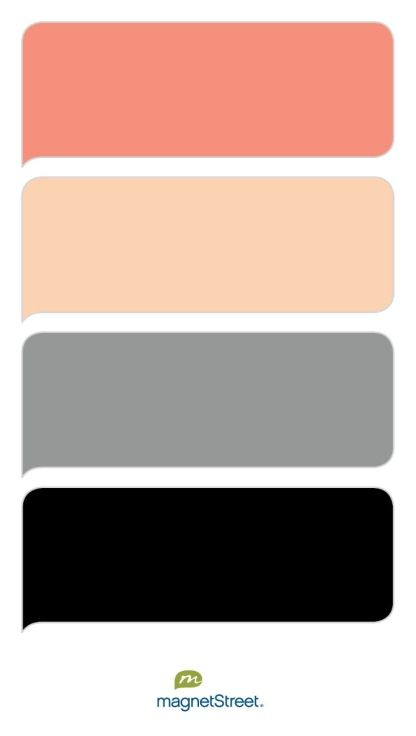

All About Me and My Family
“Always remember that you are absolutely unique. Just like everyone else.”
I am Cariel A. Pocong a SHS student of Badian NHS. I am already 18 years old. I was born on January 23, 2005 at Bantayan II, Basdiot, Moalboal, Cebu. I am an aquarians. I am an approachable type of person. Sometimes I easily get mad for no reason. Another thing is I don't have plan in life, I just go with the flow.
"My safe place"
My mother is Eden A. Pocong and I have 3 siblings, they are Kyle, Kristyl, and Krislie. I am the eldest among us four. Kyle is my next then followed by Kristyl and to our youngest one Krislie. All of them called me "Kuya". The funniest part is I was the one who's name starts with letter C.
My Hobbies
"Happy is a man who can make a living by his hobby"
 



I love reading or watching fantasy and scifi books/movies. My favorite sport is Volleyball even though I am not good at playing it. Also, I love eating lechon baboy especially its crispy skin that taste so good and delicious. The colors that will attract my attentions are grey, black, and peach. Lastly, I like people who are friendly and bubbly, cute and smiley, and very simple.
My Challenges
“Being challenged in life is inevitable, being defeated is optional.”
As of now, I've encountered many obstacles in life and it is very hard for me to face it. It comes to the point that I want to surrender, I can't hold it anymore. But, I am very thankful to my family who are always there to lift me up and gives me courage to overcome it.
My Dreams and Aspirations
“Stay focused, go after your dreams and keep moving toward your goals.”

For dreams, I haven't decided yet. As I grow up, looking my family situation I can said to myself that they don't deserve it. They are the reason why I have the courage and guts to become a succesful one someday. I want to give thema better life, no difficulties anymore. I don't want them to suffer.
My aspiration in life was my family. They are the reason why I didn't give up. They are my home and strength. I can't even live without them.